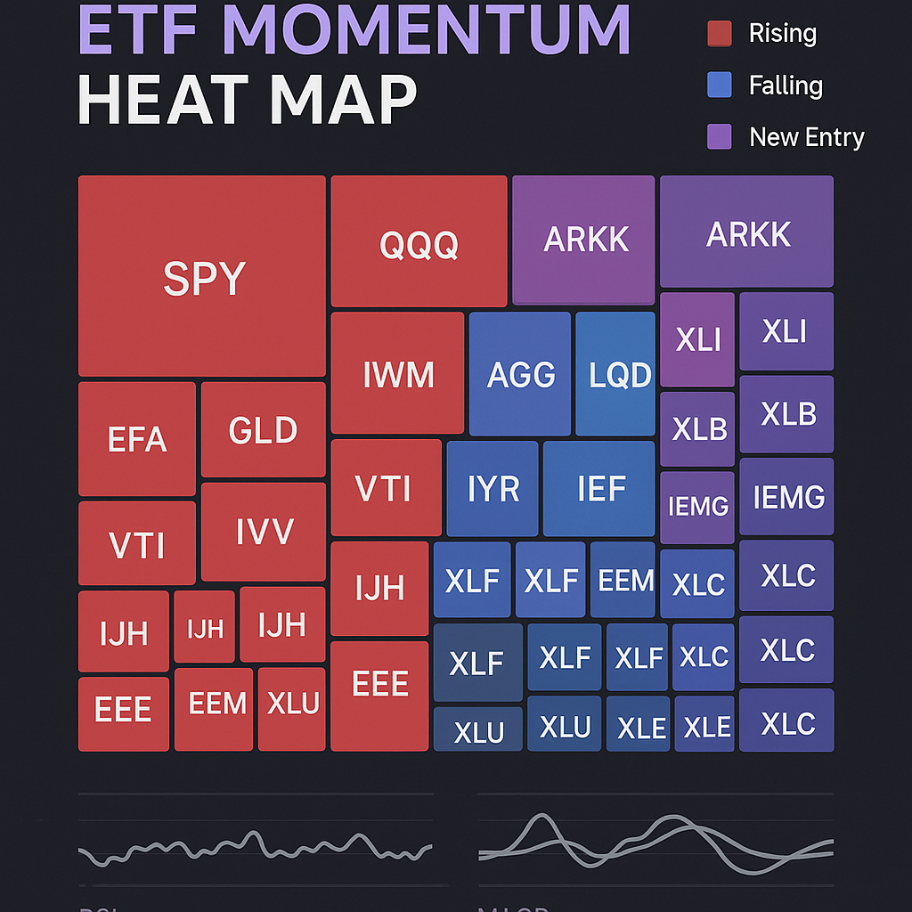

📊 AI ETF 투자 도구 만들기
🔌 API란 무엇인가?
API(Application Programming Interface)는 프로그램끼리 대화하는 약속입니다.
식당 비유
API = 식당의 메뉴판 + 웨이터
손님(프로그램)이 메뉴(API 명세)를 보고 주문(요청)하면, 웨이터(API)가 주방(서버)에 전달하고 음식(데이터)을 가져다줍니다.
실생활 API 예시
• 날씨 앱: 기상청 API에서 데이터 가져옴
• 카카오맵: 카카오 지도 API 호출
• 네이버 주식: 한국거래소 API 데이터
• ChatGPT: OpenAI API 호출
API Key = 출입증
대부분의 API는 인증 키가 필요합니다.
공공데이터포털(data.go.kr)에 가입하면 무료로 발급받을 수 있고, 이 키로 정부/거래소 데이터에 접근합니다.
https://apis.data.go.kr/1160100/service/GetSecuritiesProductInfoService /getETFPriceInfo ?serviceKey=내_서비스키 &basDt=20260601 &resultType=json
🏛️ 공공데이터포털 금융정보 API
정부가 무료로 제공하는 금융 데이터 보물창고
ETF 시세 정보
전 종목 일별 종가, NAV, 거래량, 거래대금, 시가총액
API명: 증권상품정보 - ETF 시세정보
주식 시세 정보
삼성전자, SK하이닉스 등 개별 종목 시세
API명: 주식시세정보
환율/금리 정보
USD/KRW 환율, 국고채 금리 등
API명: 한국은행 경제통계
data.go.kr 가입
공공데이터포털 회원가입
API 활용 신청
"증권상품정보" 검색 → 신청
키 발급
즉시 발급 (무료)
데이터 호출
URL + 키 = 데이터
🗺️ ETF 순위 히트맵 그래프
100개 ETF의 모멘텀을 한눈에 보는 시각화

모멘텀 = 가중 수익률 합
점수 = 12×(1개월 수익률) + 4×(3개월) + 2×(6개월)
최근 성과에 더 높은 가중치. 점수 높을수록 강한 상승 모멘텀.
히트맵 읽는 법
• 크기 = 모멘텀 점수 (클수록 강함)
• 빨강 = 순위 상승 (가속 신호)
• 파랑 = 순위 하락 (감속 경고)
• 보라 = 신규 진입
• 클릭 = 상세 차트
투자 판단 기준
• TOP 30 + 순위 ▲10 이상 = 매수 후보
• 순위 ▼20 + 1주 마이너스 = 매도 신호
• ADR 60% 이하 = 시장 과열 경고
• 의견이 아닌 데이터로 판단
🧪 각종 머신러닝 테스트
히트맵 도구에 내장된 분석 기능들
섹터별 수익률 분석
IT, 금융, 에너지 등 섹터별로 묶어서 평균 수익률 비교. 어떤 테마가 강한지 한눈에.
산점도 & 버블 차트
1개월 수익률 × 모멘텀 산점도. 3개월 × 6개월 버블(크기=거래대금). 이상치 발견.
K-means 클러스터링
수익률 프로파일로 ETF를 자동 분류. 비슷한 움직임을 보이는 종목 그룹 발견.
백테스트
모멘텀 상위 N개를 매월 리밸런싱하면 수익률이 어떤지 과거 데이터로 검증.
상관 히트맵
1개월/3개월/6개월/12개월 수익률 간 상관관계. 분산투자 효과 확인.
기술적 지표
개별 ETF 클릭 시 RSI, MACD, 스토캐스틱, 모멘텀 추이 차트 자동 생성.
이 모든 기능을 AI와 대화만으로 만들었습니다.
HTML 1,300줄 + Python 71줄. 외부 라이브러리 0개. Claude Opus 4.8에게 "이런 거 만들어줘"라고 말했을 뿐입니다.
🚀 직접 체험해보기
아래 링크에서 실제 도구를 사용해볼 수 있습니다.
비밀번호 입력 후 자동 실행
GitHub: github.com/waterfirst/etf-heatmap

🤔 우리는 업무에 AI를 어떻게 사용해야 할까?
재료 연구에서의 AI
• 논문 검색 + 요약 자동화
• 실험 데이터 패턴 분석
• 신소재 물성 예측 (ML)
• 보고서 초안 작성
• 특허 분석 + 클레임 비교
즉시 시작할 수 있는 것
• GPT Enterprise로 영문 논문 번역+요약
• 실험 데이터 CSV → AI 분석 요청
• "이 그래프에서 이상치 찾아줘"
• 주간 보고서 초안 → AI가 작성
• 경쟁사 특허 키워드 모니터링
🌍 AI는 세상을 어떻게 바꿀까?
에너지
AI든 반도체든 데이터센터든 — 전기 없으면 다 멈춤. 에너지 인프라를 가진 나라가 AI 시대를 지배한다.
소프트웨어
칩을 만들어도 그 위에서 돌아가는 AI를 만드는 건 미국. 한국은 "만드는 나라"에서 "돌리는 나라"로 올라가야 한다.
사람
한국 출산율 0.65. AI가 일자리를 대체하는 게 아니라, 사람이 없어서 AI가 대체해야 하는 구조가 온다.
"세 개의 선이면 충분하다"
AI는 복잡해지지만, 인간은 미니멀한 인사이트를 줄 수 있어야 합니다.
도메인 전문가 + AI = 대체 불가능한 존재.
여러분의 25년 경험이 AI의 연료입니다.